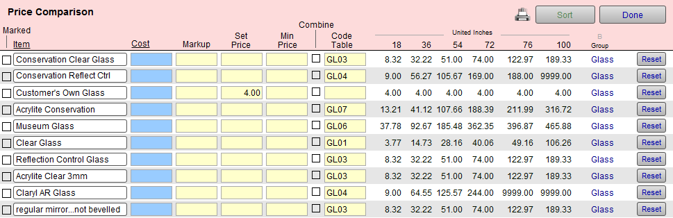

Price Comparison Explained
Price compare moulding, matboard, fabric, mat designs, mounting, hardware, extra, and fitting -- but the group that we find it most helpful with is glass/glazing.
-
When considering the types of glass you carry, make sure you have a smooth price transition up to the next grade of glass.
-
You also want to make sure that you don’t have any price dips. The Price Comparison screen was designed to do just that, by giving you a cross-reference of your retail prices.
How to Read a Price Comparison

Tip: Price corrections can be made right on this screen.
-
Price Comparison displays items from the Price Codes List View vertically.
-
It shows the retail prices for UI measurements (18, 36, 54, 72, etc.) horizontally across the screen.
-
Check your pricing both horizontally (for the individual item) and vertically (to see how it compares to other items) for price dips.
-
By reading vertically, you can compare the prices for each type of glass (same size) and ensure a reasonable price increase as you move up to the next grade of glass that you carry.
Tip: Make your most profitable glass option your default.
It is easier to downgrade a sale from museum to conservation clear than it is to start with premium clear and then try to upgrade the glass. This may give you an opportunity to discuss glass qualities.
How to Perform a Price Comparison
-
In Price Codes, find the items you want price compare, e.g. Glass (in the Group field)
You can mark the records you want to view and then perform a find for just the markedrecords.
or
Find a group of items and omit the ones you do not want on the list (from Records menu > Omit Records). -
Click the Form View button.
-
Click the Price Comparison Button sidebar button.
The Price Comparison screen appears. -
Change the Cost, Markup, and Set Price.
-
You can sort by Item (0-9, A-z) or Cost (lowest to highest) by clicking the underlined column heading.
-
Click the Printer icon to print.
-
Click an Item to return to form view.
-
You can also select the Combine box (to add a Code Table to your existing pricing).
However, you cannot change Code Tables on this screen, instead you must return to the Form View in the Price Codes file in order to select a Code Table.
See also: What are Code Tables and why have them? -
Click Done.
Note: You can only view items from the same group in order to have the prices appear correctly, e.g. Glass, Hardware, Matboard, etc. The screen is determined by the Group of the first item listed.
Tip: If you have used the Marked box, be sure to Unmark the records (with the Unmark All button) when you are done so that you are ready to use this feature again.
See also: Using the Marked Field
Tip: Print out the price comparison screen and have a price chart for when your computer is not available.
How to Find the Records for Comparision
There are three ways to locate the set of records you wish to price compare:
1) Using a Group Button
-
In Price Codes file, click Glass sidebar button.
If a list view appears, click the Form View button. -
Click the Price Comparison sidebar button.
Your items are displayed. -
You may sort them, using the Sort button.
2) Using the Find Button
-
In Price Codes file, click the Find button.
-
Perform a search for the items you wish to compare. This gives you a found set.
See also: How to Work with a Found Set as well as our video tutorial Techniques for using the Find feature (6min) -
Click the Form View button at the top of the screen.
-
Click the Price Comparison side bar button.
3) Using the Marked Box
-
In Price Codes file, click the Glass sidebar button.
-
If the form view appears, click the List View button.
-
Click the Marked box located beside each item you wish to view in your comparison list.
-
Click the Find button and locate the marked records by clicking the Marked box, then click Perform Find.
The search results appear on the screen; you may sort them using the column headings. -
Click the Form View button at the top of the screen.
-
Click the Price Comparison side bar button.
The Price Comparison screen appears. -
The items your marked are displayed. You may sort them, using the Sort button if not done previously, and compare your price points.
The Price Comparison Screen
-
Displays Cost, Markup, Set Price and Retail prices for six common sizes allowing you to compare the ease of upgrading customers to the next item, e.g. Conservation Clear to Non Glare or Non Glare to Museum glass.
-
Can be used to check the pricing incline, i.e. how rapidly the price increases with the size.
-
To adjust a Code Table or combination of pricing, switch to Form View.
-
The Reset button recalculates the displayed prices, useful after modifying the wholesale Cost, Markup or Set Price fields (the same function as committing the field with the Enter key).
© 2023 Adatasol, Inc.